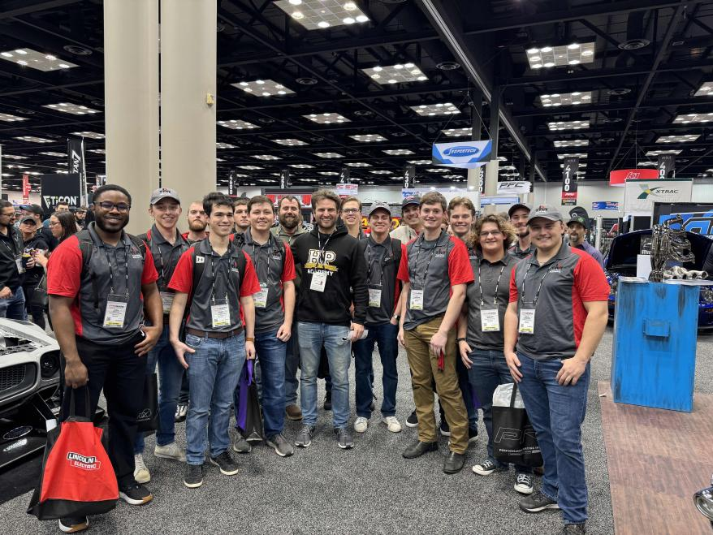

Facts and Info
We have 1974 Porsche 914 and is currently powered by a Mazda Series 5 (S5) 13B (turbo 2) out of an FC RX7. We're using a MicroTech ECU but that may get upgraded in the future if we acquire the funds for it. Our resident rotary guy has done tons of fiddling with the injectors and plugs to get it running just right. We've also installed a full rollcage, removed the roof, and installed fiberglass bumpers and a wide body kit. We've also swapped out the susupension and brakes with 911 parts and we recently further upgraded the front calipers to Wilwoods. Unfortenately, we're still using the stock transmission which has some limitations. The shifting is quite loose and 2nd feels like neutral, which has prompted a running joke in TRM where we ask "Is it in neutral?". We're looking to improve this with a better shifter, but long term it would be extremely nice to source a RWD tran-axle that is more suitable for racing applications.

Team Rose Motorsports with Rob Dahm, a well known rotary enthusiast, at the PRI Trade Show in 2023
A Short History
The Porsche was donated to the club at the end of 2007. It was raced with the stock flat-four engine in the 1970s - 80s, it then sat in a barn for many years before being donated. We raced it using the stock engine for some time, but it was quite unreliable. One member even joked "It would run better if it had a Rotary in it!", and the idea was born.
The Porsche when it was first donated to the team.